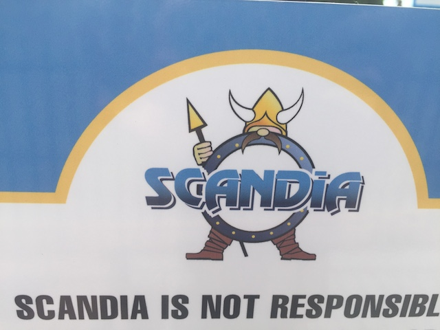
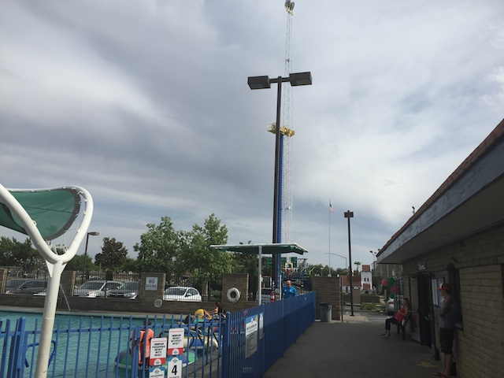

| |
Scandia Sacramento Review

Scandia is not the kind of park that most people have high expectations for. People look at something like Scandia, and just think credit whoring stop. However, there's a Scandia down in So-Cal, and it's actually really cool. Their big coaster, Scandia Screamer is really good. In fact, it's one of the most underrated coasters ever. Plus, the other random stuff, such as the bumper cars, and gravitron, are a lot more fun than you would expect them to be. In fact, I've visited the Scandia down in So-Cal many times, not for credit whoring, but just for fun. So when I saw that Scandia in Sacramento was getting a new credit, I was hopeful that it would be a repeat of what happened in So-Cal. But, the coaster just didn't seem as good, and yeah. Scandia Sacramento is not the same sort of fun FEC that Scandia down in So Cal is. This...this is pretty much just a credit whoring spot. This is exactly the type of park where you just go in, get the credit, and leave. Now, who knows. Maybe the park is just a ton of fun like the SoCal Scandia. But part of me doubts that, partially because their coaster is so much better, but there are some really dumb rules here. But we'll get into that later. Maybe it'd be better if I checked everything out, but for now, I have the credit, and that's all I need for now.
Rollercoasters
There is a link to a review of all the Rollercoasters at Scandia Sacramento.
Top Coasters
Crazy Dane Coaster Review

Flat Rides
All right. Here are all of the flat rides that are found at Scandia Sacramento. Now I didn't ride any of these. However, one flat ride still is worth talking about. That would be their Skyscraper. Yes, this place has a freaking skyscraper. SWEET!!! I love those things. So why didn't I ride this one while I was at Scandia Sacramento? I ride all the other flats at Scandia in So-Cal, and really like those. So surely, a Skyscraper is worth riding. Two reasons I skipped it. #1. I was broke (and still am). I just bought enough tickets to get the Crazy Dane credit, and leave. I didn't want to spend the money on the Skyscraper. Though I might've caved in and paid for it if it wasn't for #2. This is the ride that has the infamous "No Screaming" rule. You see, long before they added the Crazy Dane coaster and saved it from Hurricane Sandy, and drew in credit whores like myself, Scandia Sacramento was well known in the coaster community for the No Screaming rule it had on its skyscraper. *facepalm* ARE YOU F*CKING SERIOUS!!!? Yep. For the longest time, Scandia Sacramento was known as the place with a skyscraper with the No Screaming rule. All because a couple of jackass neighbors complained about the noise. Psst. I have a secret to tell you guys. You listening? YOU MORONS LIVE RIGHT BY THE F*CKING 80 FREEWAY!!!! That makes WAY more noise than a little bit of screaming from riders on a Skyscraper. If it was specifically targeting those people who constantly scream AT THE TOP OF THEIR LUNGS nonstop for the entire ride, then yeah. It makes sense to ban that. That is f*cking obnoxious and I hate it when obnoxious teens think that that's funny. But it's not just that extreme tiny minority of obnoxious doucebags. It's ALL noise. Hell, according to the article I linked to, they even stopped the ride to kick off screaming riders, only to realize that nobody on the ride was screaming. They just heard some guy on the mini-golf course cheering because he got a hole in one. That's how stupid this rule is. Screaming on a skyscraper getting mistaken for celebrating a hole in one on the golf course! Are you going to dare tell that dude celebrating on the golf course to shut up because some whiny assholes complained? What if you're throwing a house party in your home and you live by Scandia Sacramento? You better not be laughing, or cheering, or playing any music (And I don't mean obnoxiously loud. I mean AT ALL). You might piss off the doucebags. Might as well just post a big sign that reads "NO FUN ALLOWED!". Except again, these people didn't live in some remote secluded quiet shack in the mountains that suddenly just got a Family Entertainment Center with a Skyscraper. No. These stupid assholes live RIGHT BY THE F*CKING FREEWAY!!! IN THE CAPITAL OF THE F*CKING STATE!!! So they must be used to that noise, unless they bitch to their cat about all the cars on the freeway. "Damn cars on the 80! With their horns, and their brakes, and their whizzing by, heading to their jobs, and their friends, and fun places, and San Francisco. Don't they realize how obnoxious and loud they're being? Why do they even need to be on the road at all? They should just stay inside their houses. All they need is Netflix and Chinese Take-Out. Isn't that right Mr. Whiskers?" Yeah, that's how I imagine them reacting to the freeway they live by. If they were consistant in their noise complaints, which they're not. I know a different article mentioned that some neighbors complained about the way the Skyscraper looks (count the number of f*cks I give), and one dude complained that people on the ride can look into his backyard. HEY DUMBASS!!! GOOGLE EARTH EXISTS!!! I can spy in your yard way better using that. So if you're that concerned about your privacy, go cry to Google. Oh, and if you, Mr. "My Yard is Sacred and so Private" aren't screaming about your privacy constantly being violated by the N.S.A and your 4th Amendment rights being stripped away, then I'd probably meltdown from the sheer hypocrisy. The funny thing is, I don't even scream on rides. I'd be fine on this ride. I don't think I've ever scremed on a ride before. I'm pretty much exactly what they want. Dead silent. The ONLY time I screamed in sheer terror the way most people do on rides like this is when I jumped the 70 ftr @ Tar Creek for the first time. But I hate this, not only because it's essentially a "NO FUN ALLOWED" rule, but mainly just for sheer stupidity. I think I've mentioned this a million times on the site, and a billion times to anyone who is friends with me and speaks to me in person, but one of my biggest pet peeves is stupidity. Seriously, F*CK IDIOTS!!! And this is some Grade-A stupid right here. So yeah. Not gonna bother. Holy crap. I think I just spent a bunch of time ranting about this stupid rule that I forgot about all the other flat rides in the park LOL. =) They also have a scrambler, some flyers, and a slide. Looks like fun.

"HEY YOU! SHUT UP! NO FUN ALLOWED ON THE RIDE! THE ASSHOLES ARE TRYING TO BE GRUMPY IN PEACE!"
Water Rides
There is only one water ride at Scandia Sacramento. The Bumper Boats. Yep, they have them at the Scandia in So-Cal, as well as at the one here. They seem to have the exact same set up as the Scandia one, water guns and all. So hopefully this'll have the same affect as the one in So-Cal where you just get drenched and have a blast.
Dining
I did not eat at Scandia Sacramento.
Theming and Other Attractions
Here are the reviews of all the other stuff at Scandia Sacramento. Now when it comes to theming, theres pretty much none at Scandia Sacramento. The theming at Scandia Sacramento is pretty much the equivelant to the theming at your local Golf'N'Stuff style place. Which is basically saying, there is no theming here. Now as for other stuff to do, there are options. Well, of course, they do have mini golf. So I'm sure thats got to be a lot of fun. It looks like a nice course. Now like all Golf'N'Stuff style places, they do indeed have an arcade. But what I definetly find most intersting are the Go-Karts. Yep, they have Go-Karts here. While thats not totally original as many Golf'N'Stuff places have Go-Karts, but hey. I enjoyed them at the Scandia down in So-Cal. So I'm sure these are also fun go-karts.
In Conclusion
Scandia Sacramento is a fun little park. Now, I didn't really explore it in much detail as I mainly just went in, got the credit, and then left. Just a one and done, but from walking around, it seems to have a similar atmosphere to the Scandia down in So-Cal, and they have some similar rides. Yeah, it's true that the Crazy Dane Coaster is NO Scandia Screamer. But they seem to have some other good rides. They have bumper cars similar to the one in So-Cal, go karts similar to the So-Cal one, flyers, and even a freaking Skyscraper. Yeah, they still have that STUPID STUPID screaming rule. But I got out all my complaining about that stupidity up above, and if you don't mind putting up with some facepalm stupidity, those Skyscrapers are really fun rides. Yeah, I probably will never visit again, but it seems like a fun little park.
Enthusiast FAQs.
*Are there kiddy coaster restrictions? - Scandia Sacramento doesn't have a kiddy coaster.

Tips
*I'd recommend trying other stuff and not just credit whoring, but then I'd be a hypocrite. I'm sure it's fun.
*Facepalm at the stupidity of the Skyscraper rule.
*Have Fun!!!!
Theme Park Category:
Small Park
Location
Ontario, California, USA
Last Day Visited
June 11, 2016
Video
While it's not impossible for there to be a tiny little Scandia Sacramento video, it'll almost certainly never happen.
Complete Update List
2016
SunSplash 2016
Here's a link to the parks website.
Home
|